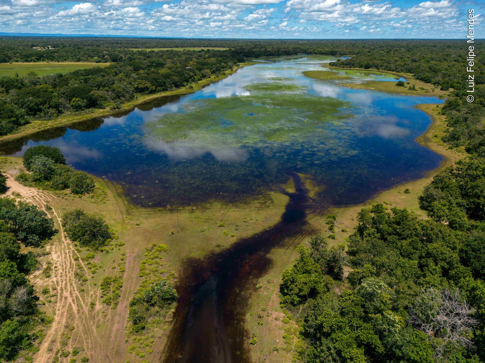
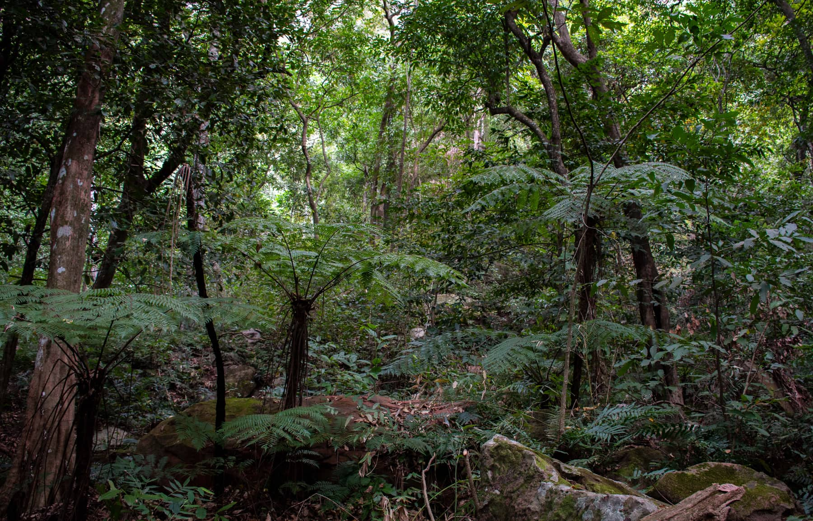
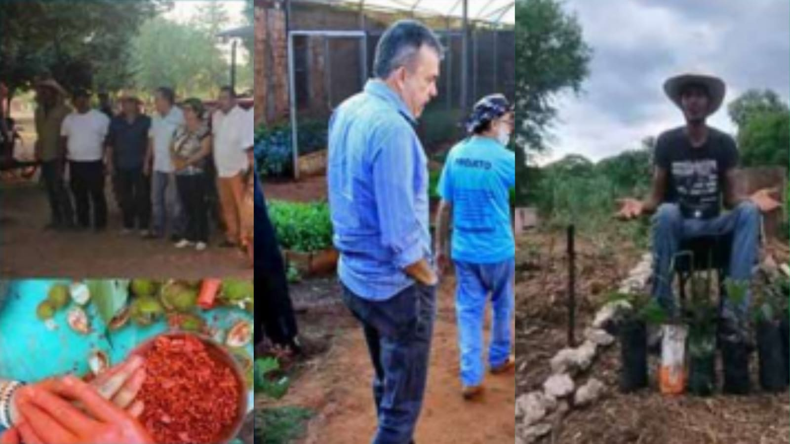
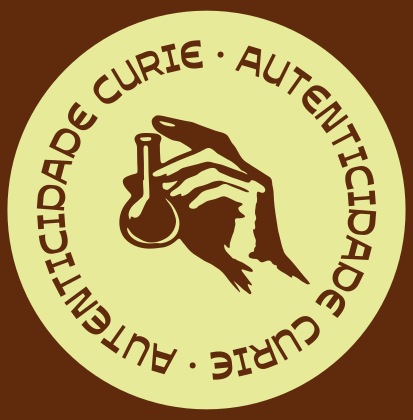
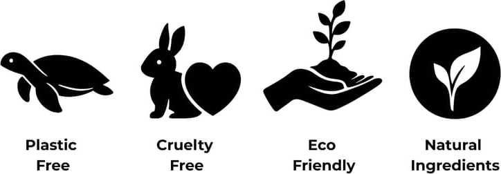

CADEIA ÉTICA
Unindo ciência, comunidades e biomas em uma cadeia ética de beleza e conservação.
CERRADO E PANTANAL
O Cerrado e o Pantanal estão entre os biomas mais ricos do mundo, abrigando uma biodiversidade única que sustenta espécies, regula o clima e mantém modos de vida inteiros. Preservar esses ecossistemas é essencial para garantir equilíbrio ambiental e continuidade dos recursos naturais, incluindo uma vasta variedade de frutos nativos ainda pouco explorados, mas com enorme potencial biológico e econômico.
Na Curie, esses biomas não são apenas cenário: são fonte de inspiração e de ativos. Acuri, bocaiúva, guavira e baru são exemplos de frutos que concentram ácidos graxos de alta qualidade, carotenoides, vitamina C, flavonoides e compostos fenólicos com intensa ação antioxidante, anti-inflamatória e reparadora.

© LUIZ FELIPE MENDES

© LUIZ FELIPE MENDES
IMPACTO NO TERRITÓRIO
Ao transformar frutos nativos em ativos cosméticos, a Curie adota um modelo de biocosmética que vai além da estética. Cada fórmula é pensada para proporcionar hidratação, regeneração, proteção celular e equilíbrio microbiológico da pele, mas sempre conectada a uma pergunta central: qual o impacto disso no território?
A valorização desses frutos reforça a necessidade de conservar Cerrado e Pantanal, ao mesmo tempo em que gera oportunidades sustentáveis para as comunidades locais. Ao apoiar cadeias produtivas baseadas em manejo responsável, a marca contribui para que a biodiversidade se torne aliada do desenvolvimento regional, e não vítima da exploração predatória.
PESSOAS NO CENTRO
Na Curie Biocosméticos, sustentabilidade não é apenas um conceito técnico, mas uma relação concreta com quem está na base da cadeia produtiva. A marca constrói suas operações junto a comunidades indígenas, quilombolas e pequenos produtores que atuam na coleta e no manejo sustentável de frutos nativos do Pantanal e do Cerrado.
Essa parceria fortalece a economia local, gera renda e promove inclusão social, valorizando o trabalho de agricultores familiares, mulheres coletoras e jovens empreendedores. Ao integrar saberes tradicionais ao desenvolvimento de cosméticos naturais, a Curie respeita práticas culturais, preserva o bioma e incentiva a permanência das famílias em seus territórios.

PROJETO MEU QUINTAL É MAIOR QUE O MUNDO
EMBALAGENS
A sustentabilidade da Curie também passa pelas embalagens. A logística reversa é o conjunto de ações e procedimentos que permitem fazer o caminho inverso do produto após o uso: em vez de virar lixo, a embalagem retorna para o fabricante ou para a cadeia produtiva de forma ambientalmente correta.

COMPROMISSO COM O PLANETA

Cada produto Curie carrega o compromisso de valorizar o bioma, apoiar comunidades locais e promover um cuidado verdadeiramente sustentável.
VER PRODUTOS